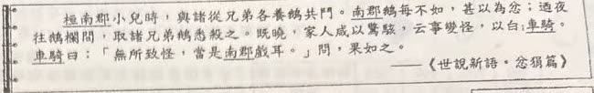
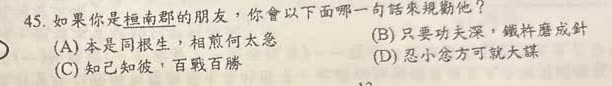

分享原卷｜第45題
完整原題
作答所需文章／材料
桓南郡小兒時，與諸從兄弟各養鵝共鬥。南郡鵝每不如，甚以為忿；通夜往鵝欄間，取諸兄弟鵝悉殺之。既曉，家人咸以驚駭，云嘗變怪，以白車騎。車騎曰：「無所致怪，當是南郡戲耳。」問，果如之。 ——《世說新語・忿狷篇》 【原題註釋】白：告訴。如果你是桓南郡的朋友，你會以下面哪一句話來規勸他？
(A) 本是同根生，相煎何太急
(B) 只要功夫深，鐵杵磨成針
(C) 知己知彼，百戰百勝
(D) 忍小忿方可就大謀
先想一想，再查看答案、解說與原圖
原卷作答：B（原卷紅筆訂正D）
正確答案：D，忍小忿方可就大謀。
逐項解析
| 選項與原句 | 判讀 | 句意與判斷理由 |
|---|---|---|
| (A) 本是同根生，相煎何太急 | 不選 | 可提醒同族勿相害，但本題最直接要處理競賽不如人就暴怒的性情，D更貼切。 |
| (B) 只要功夫深，鐵杵磨成針 | 不選 | 勉勵勤奮持續努力，不是對衝動傷害的直接規勸。 |
| (C) 知己知彼，百戰百勝 | 不選 | 重勝敵之術，不能糾正因輸而怒、傷害他人的行為。 |
| (D) 忍小忿方可就大謀 | 應選 | 忍住一時怨怒，避免衝動毀事，正扣住甚以為忿及後續殺鵝行為。 |
詳細說明與解題步驟
【全段白話】
桓南郡小時候，和堂兄弟們各自養鵝鬥勝。自己的鵝每次都不如別人，他非常生氣；於是在夜間到鵝欄，把兄弟們的鵝全部殺掉。天亮後家人十分驚駭，說發生怪異變故，便告訴車騎。車騎說：「沒有什麼可當怪事的，想來是南郡做的罷了。」一問，果然如此。
「從兄弟」指同宗的堂兄弟；「白」是告訴，不是白色；「車騎」是人物的官號稱呼，不能誤抄成桓騎。原文只說悉殺之，沒有交代用什麼方式殺鵝，也沒有說大家的鵝平時共關同一欄。
【規勸要扣住犯錯的原因】
「南郡鵝每不如，甚以為忿」點出他因鬥鵝輸了便生怒，接著殺掉別人的鵝。最直接的規勸是忍住一時小怨怒，不做衝動傷害之事，才能成就長遠的事，故選D。
A本是同根生可勸同宗親人不要互相傷害，但本段直接被殺的是鵝，人物的錯在不能忍受競賽失利的怒氣，D更切合行為動機。B鼓勵勤奮，C談掌握敵我而獲勝，都不是改掉逞怒殘害的重點。
來源AI將答案判為A，未扣住甚以為忿；原卷紅筆為D。保留原題及原卷批改，訂正解說為D，不把殺鵝誇寫成殺害兄弟。
核對註記：已依原卷或完整文字核對並獨立解題；對應教材課次未確認，歸綜合。
原圖（僅本題）

